Welcome to our Academics page, where we take pride in providing a
comprehensive and stimulating educational experience for your child.
Our kindergarten school's academic program is thoughtfully designed
to foster a love for learning while building a strong foundation of
essential skills and knowledge. From language arts and mathematics
to science and social studies, our curriculum is carefully crafted
to spark curiosity and encourage active exploration.
Our Features
Our Special Features
Our kinder garden school provides a nurturing and stimulating
environment, fostering a love for learning that lasts a lifetime.
Join us as we embark on an exciting educational journey together!
Thematic Learning
Our curriculum is centered around engaging themes that capture
children's imaginations. Each theme integrates multiple subjects,
making learning enjoyable and relevant.
STEAM Education
We offer innovative STEAM (Science, Technology, Engineering, Arts,
and Mathematics) programs that promote hands-on exploration,
critical thinking, and problem-solving skills.
Language Immersion
Through language immersion programs, children have the opportunity
to learn a second language, enhancing cognitive development and
global awareness.
Art and Creativity
Art is celebrated at Little Learners Academy. Our art-focused
activities encourage self-expression, creativity, and the
appreciation of various art forms.
Outdoor Education
Our expansive outdoor learning spaces provide a stimulating
environment for children to explore nature, fostering a connection
with the environment.
Play-Based Learning
Play is an integral part of early childhood education. Our
play-based approach enhances social skills, emotional development,
and imaginative thinking.
Our Features
What Students Learn
At Little Learners Academy, we strive to cultivate a love for
learning and equip children with essential skills for their future
success. Our academic programs cover a wide range of subjects,
allowing students to develop a strong foundation and discover their
interests. Some key areas of learning include
Language Arts
Reading, writing, storytelling, and communication skills.
Mathematics
Number sense, basic operations, problem-solving, and logic.
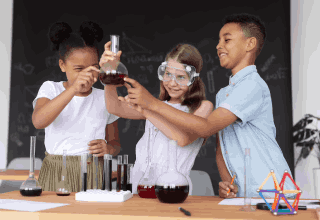
Science
Exploring the natural world through hands-on experiments and
investigations.
Social Studies
Cultivating an understanding of diverse cultures and
communities.
Arts and Crafts
Encouraging creativity through various art forms and crafts.
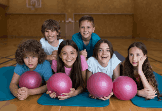
Physical Education
Promoting physical fitness, coordination, and teamwork.
Our Gallery
Our Rooms Gallery
Step into our Gallery and immerse yourself in a visual journey of
cherished moments and unforgettable experiences at our kindergarten
school.
Our well-equipped classrooms are designed to provide a nurturing
and stimulating learning environment. Each classroom is
thoughtfully arranged to inspire creativity, curiosity, and
engagement.
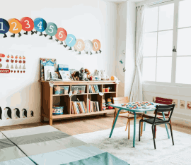
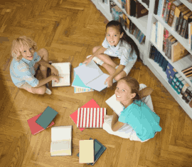
Library
Our expansive library is a treasure trove of books, fostering a
love for reading and supporting students' literacy development.
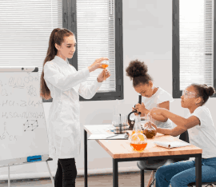
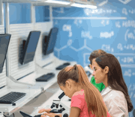
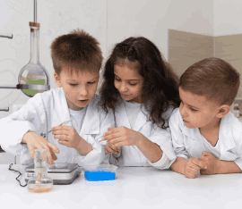
Science Lab
Our hands-on science lab allows students to conduct experiments
and explore scientific concepts in a fun and interactive way.
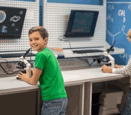
Computer Lab
Equipped with age-appropriate technology, the computer lab
enhances students' digital literacy and computational skills
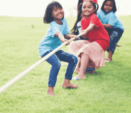
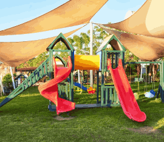
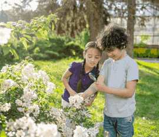
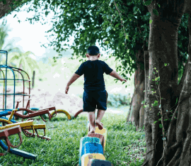
Garden and Nature Area
Our garden and nature area offer an opportunity for children to
connect with nature and learn about plants and the environment.